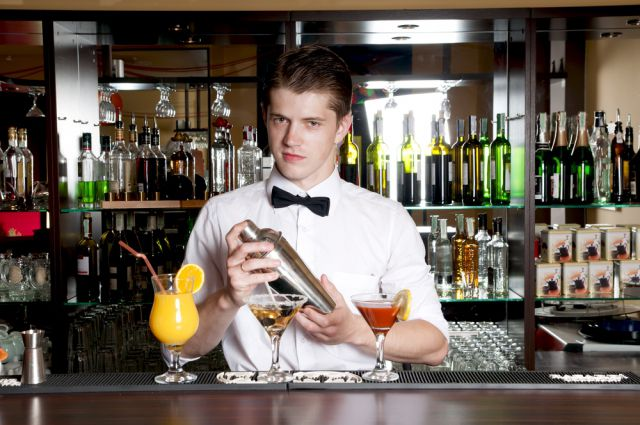

После трех рюмок коньяку француз
переходит на минеральную воду,
а русский — на “ты”.
Дон Аминад
Алкоголь очень плотно вошёл в нашу жизнь, подчинив себе разумы миллионов граждан всех возрастов. Предписание минздрава о том, что «чрезмерное употребление алкоголя вредит вашему здоровью» уже не актуальна, ведь для многих алкоголь служит средством расслабления, снятие усталости после тяжёлого трудового дня, помогает завязать новые знакомства, даёт ощущение свободы и возможности совершать новые «подвиги», на которые в трезвом уме человек вряд ли решится. Влияние алкоголя на здоровье может быть сверх пагубным. Многим людям кажется, что алкоголь их бодрит, но как доказала наука, алкоголь относится к психоактивным веществам тормозящего, а не стимулирующего действия, поэтому у людей постоянно принимающих алкоголь притупляется работа головного мозга, человек становится психически-неуравновешенным или заторможенным, появляются признаки беспричинной агрессии. Употребление алкоголя за рулем опасно для жизни!
Нередко близкие алкоголика страдают больше чем он сам, так как находятся в состоянии стресса, а это приводит к психическим нарушениям и различным заболеваниям. В семье могут возникнуть пьяные драки и потасовки, в которых зачастую страдают не только взрослые, но и дети. Злоупотребляющие алкоголем люди редко могут найти хорошую работу, а это ведёт к ухудшению материальной жизни семьи, так как все деньги спускаются на выпивку. От алкоголя может пострадать любой член семьи пьющего!
На данном этапе алкоголь в России находится в свободной продаже. Зайдя в любой магазин можно увидеть огромный ассортимент спиртных напитков. Алкогольными или спиртными напитками называют напитки содержащие в своём составе не менее 1,5% этилового спирта. Остальную часть составляет вода, различные красители, ароматизаторы, сахар, но большого значения они не имеют, потому что алкоголь употребляют в основном из-за эффекта на организм спирта.
По концентрации спирта алкогольные напитки делятся:
-напитки с низким содержанием алкоголя, к ним относятся вино, пиво, слабоалкогольные коктейли.
-напитки с высоким содержанием спирта, это водка, коньяк, ром, джин, виски, ликёр и т.д.
Какой бы напиток вы не выбрали, главное знать меру в его употребление, поэтому если вы хотите наслаждаться вкусом алкоголя и сохранить своё здоровье, нужно уметь во время остановиться! Лучше всего подходят слабоалкогольные коктейли, содержание спирта в них от 3-25 градусов, к тому же они очень вкусные. Сделать коктейль дома совсем не сложно, самый простой это коньяк с вишневым или виноградным соком, пропорции 50 граммов коньяка на 150 сока. У нас на сайте есть раздел «коктейли», там вы найдете много интересного и вкусного.
С наилучшими пожеланиями